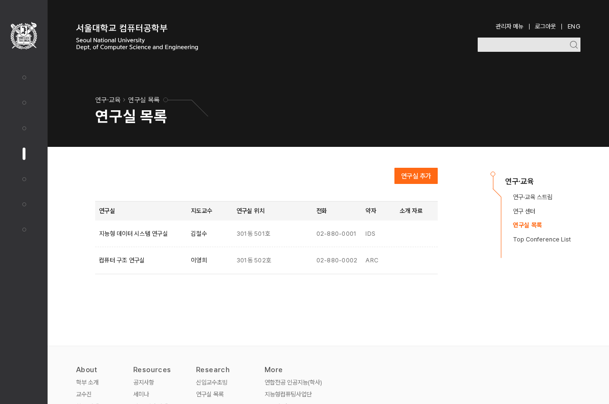

주요 실행의 색을 실제 버튼에 연결하기
DS-014 확정 · 11곳 적용 · 대표 4장면 승인안 일치추가·저장·예약은 짙은 중립색을 기본으로 하기로 했다. 기존 저장 버튼의 색을 추가·예약 11곳에 적용했다. 아래 비교는 승인 당시의 전후 자료다.
왜 이 버튼들을 바꾸는가
현재 문제: 같은 추가 행동인데 교수·새 소식은 짙은 회색이고 연구실·장학금·시설은 주황이다. 저장은 회색, 예약은 주황으로 섞여 있어 색의 역할을 일관되게 설명하기 어렵다.
변경 이유: DS-004에서 정한 방향에 맞춰 기존 저장 버튼의 #404040 바탕과 #737373 호버를 재사용한다. 새로운 회색을 추가할 필요가 없다.
기대 효과: 일반적인 작업 실행은 짙은 버튼, 선택·그래픽은 기존 주황으로 구분한다. 추가·예약을 화면마다 다른 방식으로 강조하던 차이를 줄인다.
특정 회색이나 호버 농도가 접근성 필수값인 것은 아니다. 이번에는 색의 역할을 맞춘다. 주황을 쓰는 면의 #ff6914와 흰 글씨 유지 결정(DS-007)은 그대로다.
01. 기존 저장 버튼의 값으로 맞추기
현재 · 추가·예약에 남아 있는 주황
기본·호버 #ff6914 / 흰 글자
제안 · 저장 버튼과 같은 짙은 회색
기본 #404040 / 흰 글자
호버 #737373 / 흰 글자
02. 실제 화면에서 전후 비교
같은 앱 화면에서 대상 버튼의 배경 클래스만 기존 회색 버튼과 같게 바꿨다. 이 비교 이미지는 승인 전 견본이며, 이후 앱 적용 결과가 대표 4장면 모두 제안 이미지와 일치했다.

{kind=link}
03. 첫 적용은 추가·예약 11곳
| 역할 | 적용할 행동 | 범위 |
|---|---|---|
| 관리 화면의 추가 9곳 | 연구실·연구 스트림·연구 센터·장학금·새 교과목·시설·동아리·기업·연도 추가 | 데스크톱 중심. 학사 공유 컴포넌트는 학부·대학원에 함께 영향 |
| 일반 이용자 예약 2곳 | 예약창 열기, 예약 제출 | 데스크톱·모바일. 기존 비활성 조건 유지 |
공지의 편집/완료 전환, 오류 화면의 재시도, 삭제·확인, 어두운 바탕의 버튼은 각 역할을 비교하는 컴포넌트 단계에 남긴다. 기존 주황의 선택·그래픽도 그대로 유지한다.
DS-014 결정 · 적용 확인
추가·예약 11곳에 기본 #404040 / 호버 #737373 / 흰 글자를 적용했다.
한국어 대표 4장면이 승인안과 일치했다. 한국어·영어 사용처의 기본·호버·키보드 초점과 예약 비활성 상태를 확인했다. 적용 기록과 한계.
3-2 기반 색 검토를 정리했다. 입력 기본 경계·컴포넌트별 선택/비활성/초점 조합은 형태와 함께 4단계에서 검토한다. 다음은 3-3 본문 읽기 밀도다. 아이콘·레이아웃은 아직 시작하지 않았다.